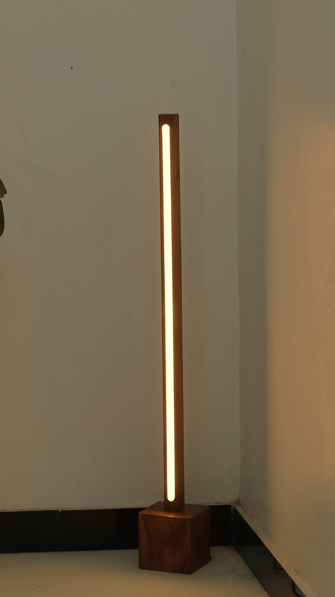

Follow
the
line.
it ends somewhere warm
Solid Indian teak.
No MDF. No veneer.
inches
2700–3000K
warm, not white
It ends
in a
warm
corner.
₹999
₹1,599
nixwoods.com
Solid teak
Cash on delivery
Free delivery